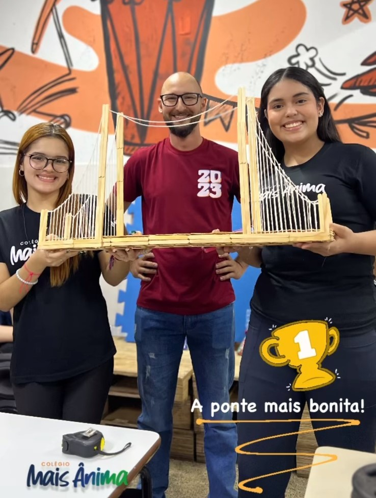
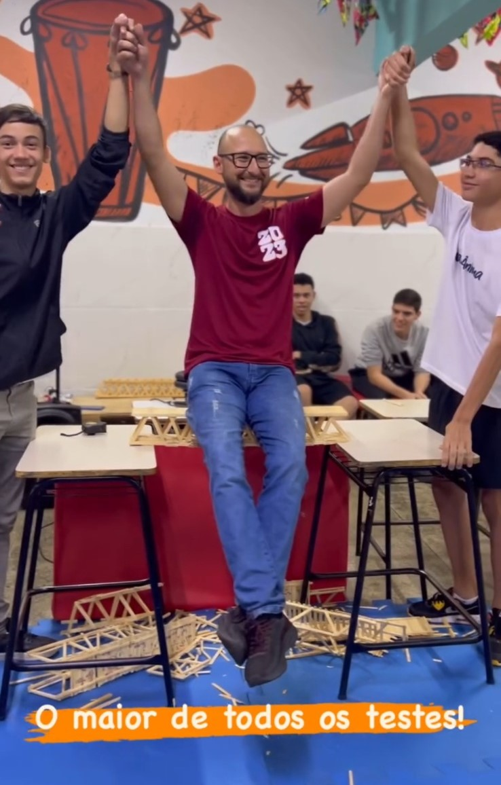

Campeonato de Pontes do Colégio Mais Ânima
O colégio Mais Ânima propõe um desafio especial: conectar vilas distantes através de pontes feitas de palitos de picolé. Os estudantes, munidos de conhecimentos em física, geometria e engenharia, embarcam em uma competição para criar pontes funcionais e magníficas. Além de enfrentar desafios físicos, a competição visa encantar com a beleza e elegância das estruturas, promovendo o aprendizado prático. As pontes tornam-se não apenas estruturas de ligação, mas também símbolos de colaboração, superação e conhecimento. O vencedor será coroado o "Arquiteto/engenheiro do colégio Mais Ânima”.
Este projeto educacional tem como objetivo principal compreender e aplicar conceitos fundamentais relacionados a tipos de forças, cálculos geométricos e resistência dos materiais, integrando teoria e prática de forma dinâmica. Além disso, busca promover a valorização de uma competição saudável como ferramenta de aprendizado, incentivando o trabalho em equipe, a criatividade e a aplicação de conhecimentos científicos em desafios reais.
Os resultados esperados incluem a integração do conteúdo abordado em sala de aula com situações práticas do cotidiano, fomentando a conscientização sobre a relevância da ciência e da engenharia na solução de problemas reais. Os participantes explorarão princípios de dinâmica e estática para construir pontes estáveis, aplicarão conceitos de torque e momento angular para aperfeiçoar designs, e utilizarão noções básicas de engenharia dos materiais e geometria para criar estruturas eficientes e esteticamente agradáveis. O cronograma do projeto inclui a apresentação aos alunos no dia 04/02/2025, seguida pela competição, que ocorrerá em 18/03/2025. Esta iniciativa oferece uma oportunidade única para os alunos vivenciarem a ciência de forma interativa e divertida, enquanto desenvolvem habilidades técnicas e criativas.
Voltar à Página Inicial